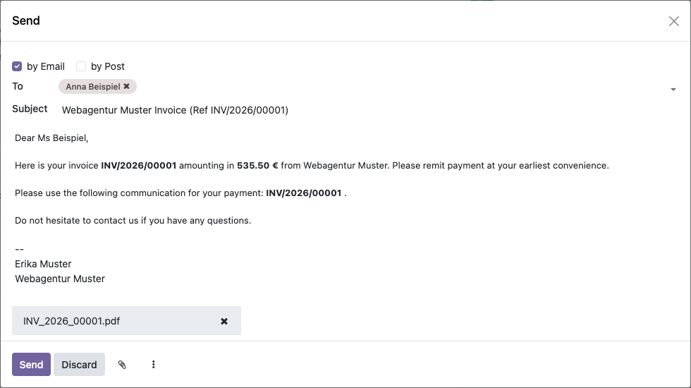
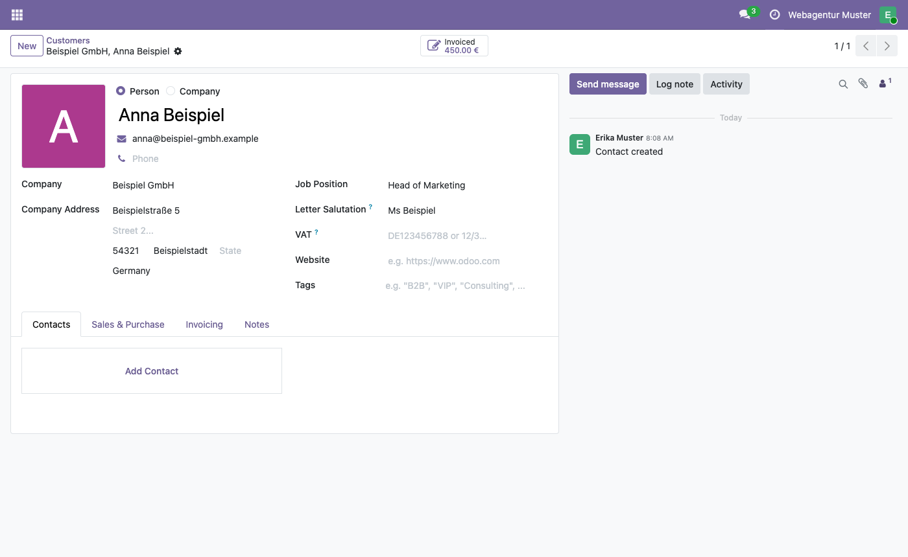

A letter salutation on the contact and the matching greeting line in the
invoice and credit note mails

Screenshot taken with Odoo 19; the greeting line is the same in Odoo 20.
What it does
A field Letter Salutation on the contact, for example "Frau
Muster" or "Herr Dr. Meier".
The greeting line in the language of the mail: "Guten Tag Frau Muster,",
"Dear Frau Muster," or "Bonjour Frau Muster,".
Without a salutation, a contact person of a company is greeted by their
name, every other contact in general terms ("Dear Sir or Madam,"):
companies, associations and private customers without a parent contact,
invoice addresses.
Odoo has no title field on contacts any more, and its invoice mail
greets "Dear Anna Beispiel (Muster GmbH)," or an invoice address by its
name.
On installation, the invoice and the credit note mail use the greeting
line in every language, also in languages installed later.
Uninstalling puts the original greeting back.
Other templates can use it too:
<t t-out="object.partner_id.letter_greeting"/>
One field on the contact
Next to the job position (screenshot taken with Odoo 19)

Good to know
German, English and French; other languages get the English greeting.
Odoo 20 cannot tell a person from an association by its name: a private
customer without a parent contact needs a salutation to be greeted
personally.
An invoice or credit note mail whose first paragraph does not start with
Odoo's greeting is left unchanged.
Alpha: the invoice mails of Baumgärtner Marketing GmbH have started like this
since September 2026, the module is new. Provided without any warranty under
the GNU AGPL-3.0.